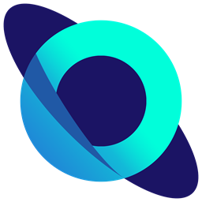

ONIX CLIENT
A client and launcher for Minecraft: Java Edition, in the style of Lunar Client and Badlion Client. A Java Edition remake of Onix Client.
Work in progressAbout
Onix Client is a popular client for Minecraft: Bedrock Edition. This project brings its look and its idea to Java Edition: a clean module menu, HUD elements you can move, saved profiles, and a small launcher. It is made with the permission of the Onix Client developers.
Not an official Minecraft product. Not approved by or associated with Mojang or Microsoft.
What is in it
| Part | What it does | State |
|---|---|---|
| Client for 1.8.9 | 40+ modules, module menu, HUD editor, profiles, performance switches. | Working |
| Client for modern versions | The same modules and menu on Minecraft 26.3. | Early preview |
| Launcher | One window with account, settings and Microsoft sign-in. | Sign-in built. Installing and starting the game is not built yet. |
Why it needs the Minecraft services API
The launcher signs players in with their Microsoft account and starts the game with that account.
It uses the device code flow: it shows a short code, the player enters it on
microsoft.com/link in their own browser, and Microsoft hands back a token. The password is never
typed into the launcher.
The token is then traded, step by step, for an Xbox Live token, an XSTS token and a Minecraft access token, and the launcher reads the player's profile (name and UUID). These are the only calls it makes:
login.microsoftonline.com— Microsoft sign-inuser.auth.xboxlive.comandxsts.auth.xboxlive.com— Xbox Liveapi.minecraftservices.com— Minecraft token and profilesessionserver.mojang.comandtextures.minecraft.net— the player's skin, for the head in the corner
Privacy
- No analytics, no telemetry, and no server of our own.
- The refresh token is stored on the player's own computer, in
%APPDATA%\.onixclient\launcher.json, and is sent only to Microsoft. Signing out deletes it. - Settings and profiles are files on the player's computer. Nothing is uploaded.
Source code and contact
The source code is on GitHub: github.com/luvywndhks/OnixClient. Questions and problems can be reported on its Issues page.
Design and module ideas follow Onix Client. Fabric, Ornithe and Mixin power the mods. Poppins font, SIL Open Font License. Minecraft is a trademark of Mojang AB.